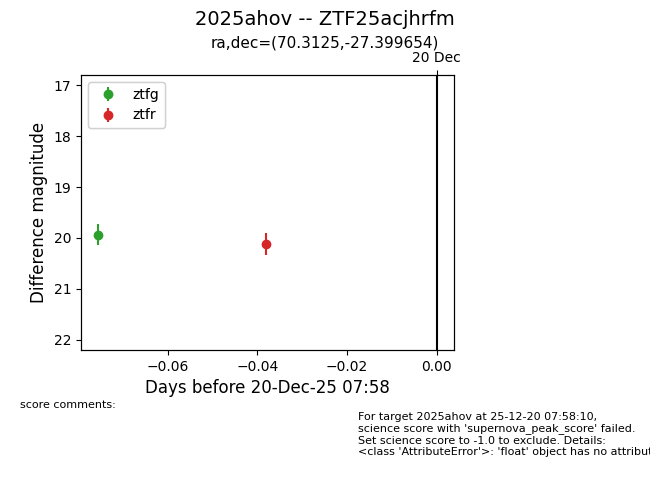
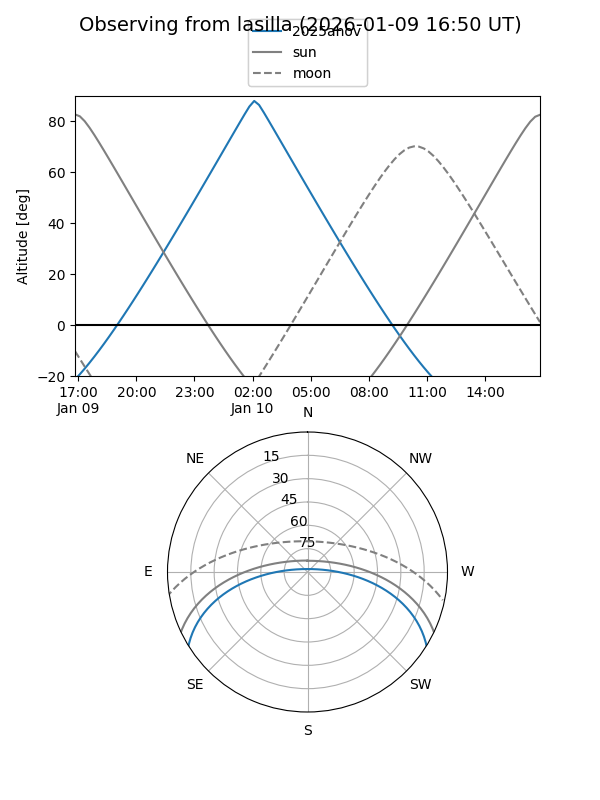
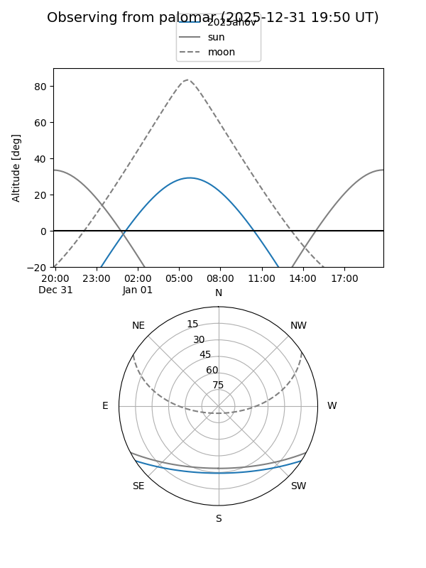
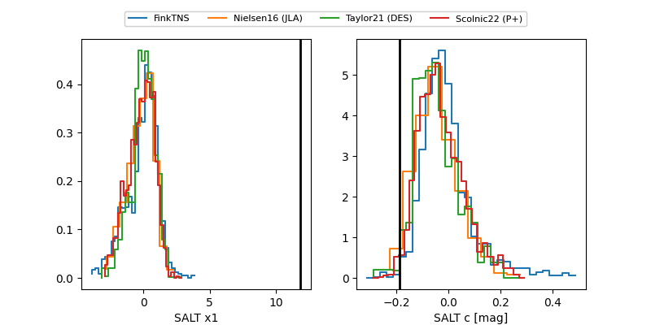

2025ahov
Target 2025ahov at 2025-12-31 18:00
Aliases and brokers:
FINK: link
Lasair: link
ALeRCE: link
TNS: link
YSE: link
alt names
ZTF25acjhrfm (ztf,fink_ztf)
2025ahov (tns,yse)
Coordinates:
equatorial (ra, dec) = 70.3125,-27.39965
equatorial (HMS+DMS) = 04:41:14.99,-27:23:58.76
galactic (l, b) = (227.3046,-39.41507)
Flags:
Photometry:
last ztfg=19.98, ztfr=20.12
2 ztfg, 1 ztfr detections
Lightcurve

Visibility


Additional plots
